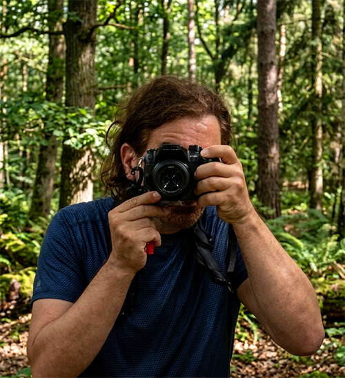
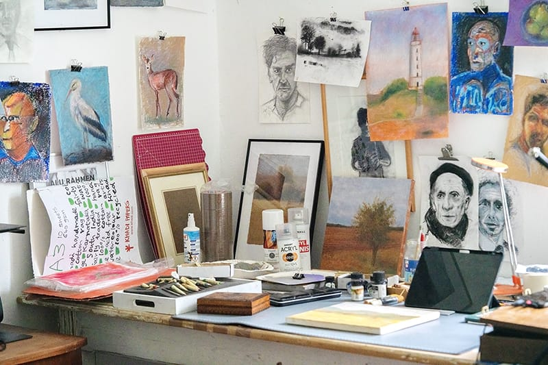
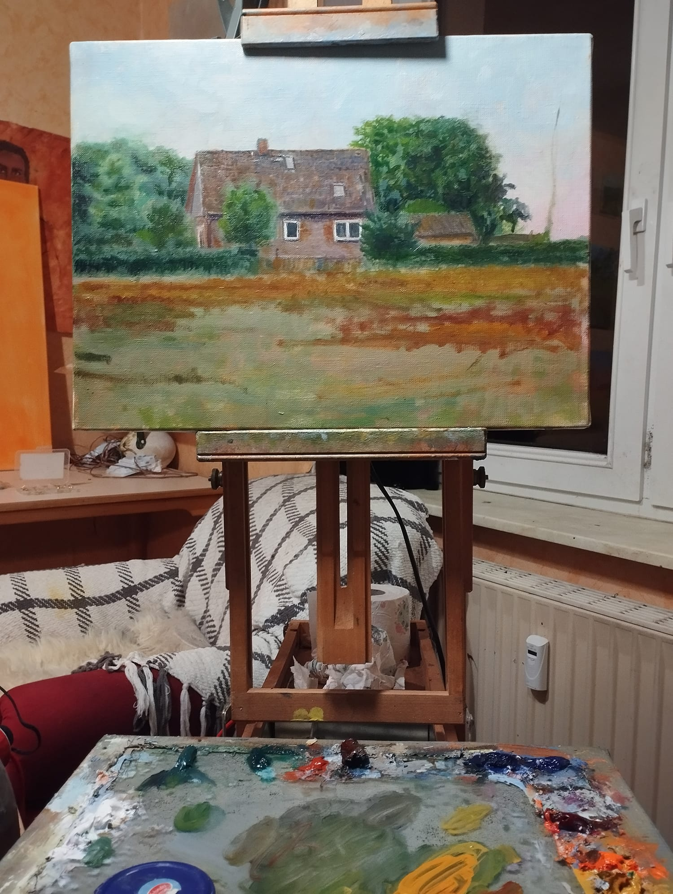

Künstler, Illustrator und Maler — Berlin
Meine Beziehung zur Malerei begann früh. Ich wuchs umgeben von Bildern auf, die meine Wahrnehmung prägten und mir zeigten, dass Kunst Erinnerung, Atmosphäre und Emotionen transportieren kann, lange bevor man sie bewusst versteht. Als Kind lernte ich durch Beobachtung, durch Materialien und durch die stille Disziplin des genauen Hinsehens. Das Malen wurde für mich weniger zu einem Handwerk als vielmehr zu einer Art zu denken.
Seit 1997 arbeite ich hauptberuflich als Künstler; in dieser Zeit machte ich meine ersten experimentellen Schritte in der digitalen Kunst, während ich kontinuierlich analoge Arbeiten schuf. Auch in den letzten zwei Jahrzehnten, die überwiegend durch die Arbeit am Computer geprägt waren, kehrte ich regelmäßig zu intensiven analogen Phasen zurück.
Während dieser gesamten Laufbahn bewegte sich mein beruflicher Schwerpunkt tief im Schnittbereich von klassischer Kunst und digitalen Medien — insbesondere in den Bereichen 3D-Visualisierung, Illustration und Animation. Doch trotz aller technischen Möglichkeiten blieb die Malerei immer das wahre Zentrum meiner Arbeit.
In den letzten Jahren bin ich fast vollständig zur Leinwand zurückgekehrt. Das Leben und Arbeiten zwischen Berlin und der brandenburgischen Landschaft hat etwas bestätigt, das ich schon immer intuitiv wusste: Malen ist für mich nicht einfach ein Beruf, sondern eine notwendige Form der Wahrnehmung und der Auseinandersetzung mit der Welt.

… und warum ich so arbeite

Ich habe früh gelernt, dass Freiheit in der Malerei davon abhängt, Gewissheit so lange wie möglich hinauszuzögern. Ich versuche, mich nicht zu früh auf Details oder feste Entscheidungen festzulegen.
Deshalb beginne ich selten mit kleinen Details. Ich konzentriere mich zunächst auf Struktur, Rhythmus, Atmosphäre und Balance und halte jeden Teil der Leinwand lebendig und offen für Veränderungen.
Ölmalerei gibt mir genau diese Freiheit. Sie bleibt fluid, anpassungsfähig und verzeihend. Mit breiten Pinseln, Palettenmessern, Tüchern und geschichteten Oberflächen kann ich Schwerpunkte ständig verschieben, löschen, neu aufbauen.
Für mich wird ein Bild nicht mechanisch konstruiert. Es wächst. Manchmal langsam, manchmal heftig, manchmal über Monate.
Was mich am meisten interessiert, ist nicht Perfektion, sondern Vitalität: der Moment, in dem ein Bild beginnt, von selbst zu atmen.
